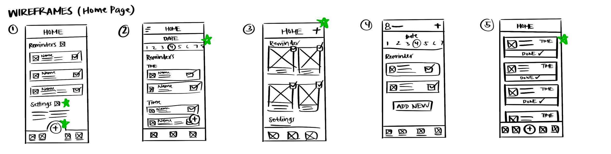
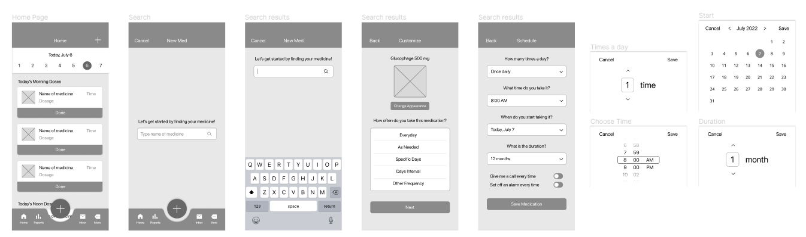
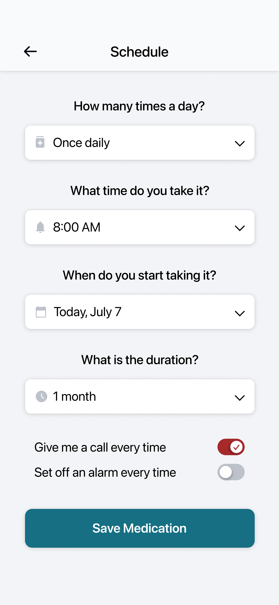
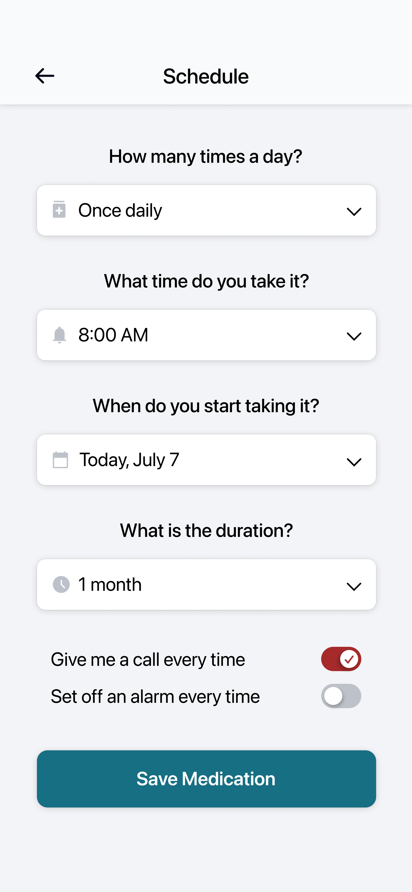
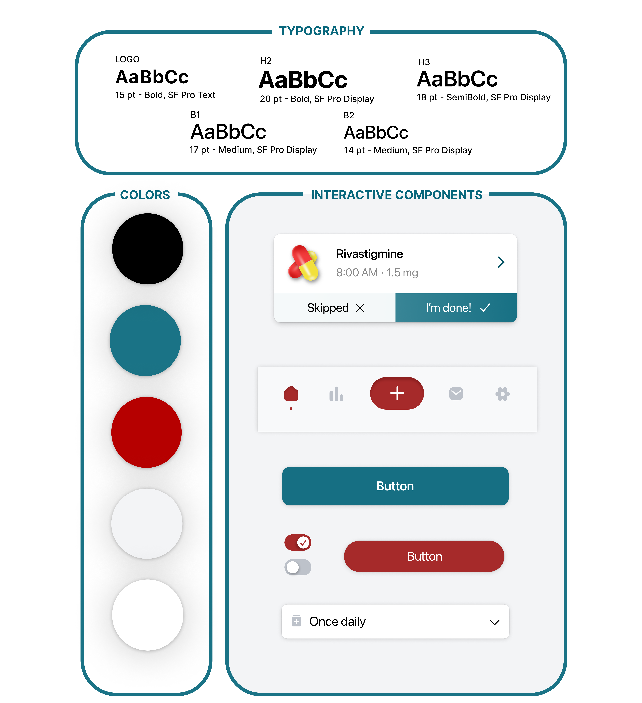

PROJECT: MedTime Health App
ROLE: UX Designer + Researcher
TIMELINE: November 2022
Project Overview
Many people who have to take medicine end up forgetting to take it because they do not have a system set up to remind them. This could lead to serious consequences. MedTime is an app that reminds people to take their medication on time. This app will be helpful to those who suffer from forgetting to take their medicine.
Understanding Users
To work towards understanding the users I am designing for, I did research by formulating personas and conducted competitive audits as part of my ideation process. I decided that there would be two main user groups: those who would access the app on their mobile devices and those who would use website versions.
Crafting Personas
Paper to Digital
I sketched multiple iterations of paper wireframes for multiple screens to get started with the design. I put stars next to any features I might consider keeping in the next iteration of the designs.

After creating these wireframes, I digitized them with Figma and turned wireframes into working mid-fidelity prototypes.

Final Product

 


The Design System

Accessibility
1. High Contrast Colors
In my design, I included high contrast colors and bolded fonts for emphasis and ease of viewing. This allows for people with vision impairments to still read the text with less effort.
2. NavigationI placed all the necessary functions of the primary user flow on the main page of the app, which means all the necessary features are able to be found in one place, allowing users to complete most tasks without navigation issues.
Takeaways
What I Learned:
I learned that designing for laptop and tablet are quite similar experiences because of their similar proportions. However, I thought that mobile apps and mobile sites would basically be the same, but there were many different considerations I had to make to transform the app into a mobile website design.